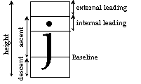

| Font.Sizes | Part of Font module |
| Syntax | Font.Sizes (fontID : int, var height, ascent, descent,
| |||||||||
| Description | Font.Sizes is used to get the metrics of a particular font. The various parts of the metric are illustrated below. Note that you can calculate the external leading by subtracting the ascent and descent from the height.
 | |||||||||
| Details | If Font.Sizes is passed an invalid font ID, a fatal error occurs. If the Font.Sizes call fails for other (non-fatal) reasons, the metrics for the default font will be returned. As well, Error.Last will return a non-zero value indicating the reason for the failure. Error.LastMsg will return a string which contains the textual version of the error.
| |||||||||
| Example | The program gets information about 24pt Bold Italic Palatino.
var fontID, height, ascent, descent, internalLeading, : int
var externalLeading: int
fontID := Font.New ("Palatino:24:bold,italic")
Font.Sizes (fontID, height, ascent, descent, internalLeading)
externalLeading := height ascent descent
put "The height of the font is ", height, " pixels"
put "The ascent of the font is ", ascent, " pixels"
put "The descent of the font is ", descent, " pixels"
put "The internal leading of the font is ", internalLeading, " pixels"
put "The external leading of the font is ", externalLeading, " pixels"
Font.Free (fontID)
| |||||||||
| Execute | ||||||||||
| Status | Exported qualified. This means that you can only call the function by calling Font.Sizes, not by calling Sizes.
| |||||||||